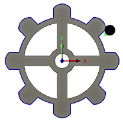
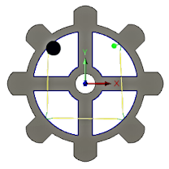

Sélectionnez une face, une arête ou une esquisse pour définir la limite d'usinage. Si vous sélectionnez une face, des trajectoires d'outil sont créées sur toutes les arêtes. Sélectionnez des arêtes pour les zones comportant des perçages ou des poches au niveau de la face. Si vous sélectionnez l'arête inférieure, la référence de la profondeur de coupe sera automatiquement définie.
 |
 |
Sélection de chaîne - Externe |
Sélection de chaîne - Interne |
REMARQUE: lorsqu'une face est sélectionnée, toutes les limites intérieures et extérieures sont détectées.